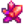
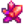
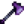
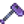
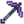
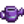

Herramientas:
Las herramientas te ayudan a realizar diferentes cosas. Puedes llevarlas contigo en tu mochila para poder usarlas, o almacenarlas en cofres cuando no las necesites.
Mejoras
Puedes mejorar tus herramientas en la Herrería a cambio de oro y barras de metal, con mejoras que tardan dos días en completarse. Durante la mejora, no podrás comprar nada o pedir a Clint que abra geodas. Las herramientas deben mejorarse en orden ascendente de materiales; por ejemplo, una herramienta de cobre no puede mejorarse directamente a iridio.
Consejos:
- El significado práctico de que una actualización "tarde dos días en completarse" es que te despertarás en dos días sucesivos sin tu herramienta. Puedes usar la herramienta durante el día y luego llevarla a la Herrería (antes de que cierre) para mejorarla. Al día siguiente te quedarás sin tu herramienta. Al otro día, debes ir a la Herrería a recoger la herramienta, y podrás utilizarla durante el resto del día.
- Cuando una herramienta haya terminado de actualizarse, aparecerá un mensaje en la esquina inferior izquierda de la pantalla al despertar el día.
Encantamientos
Puedes añadir un encantamiento al azar a cualquier arma cuerpo a cuerpo o herramienta, con la excepción de las Bateas, Guadaña, Guadaña dorada, Guadaña de Iridio y los Cubos de basura. Esto cuesta una  Esquirla prismática y 20  Fragmento de cenizas.
Esquirla prismática y 20  Fragmento de cenizas.
Cada arma o herramienta solo puede tener un encantamiento, y el encantamiento aplicado es aleatorio. Sin embargo, usar otra Esquirla Prismática permite re-aleatorizar el encantamiento. Las herramientas registran los dos encantamientos anteriores que se les han aplicado para que no se vuelvan a seleccionar al volver a aplicar un encantamiento.
Mejorar una herramienta mantiene su encanto.
Los encantamientos son aleatorios en base al número de veces que has encantado cualquier arma o herramienta, así que reiniciando el día y encantando una arma o herramienta diferente puede cambiar el resultado.
Encantamiento de armas
Solo se aplica a armas cuerpo a cuerpo (no se puede aplicar a los tirachinas).
| Nombre | Efecto |
|---|---|
| Diestro | 50% de reducción de tiempo en movimientos especiales. (Se acumula de forma multiplicativa con Acróbata hasta 75% de reducción de cooldown) |
| Matabichos | Duplica el daño a las larvas, moscas, insectos, arañas, cangrejos de roca. permite matar bichos armados. |
| Cruzado | 50% más daño a las momias, fantasmas, esqueletos y espíritus de las sombras. Evita que las momias revivan. |
| Vampírico | 9% Probabilidad de recuperar algo de vida al matar monstruos. La cantidad curada es del 9% al ≈10,67% de la salud máxima del monstruo y no varía con el daño del arma. |
| Fabricante de heno |
Recolectas más fibra al recoger hierbajos. También hay oportunidad de recoger heno. Cortar hierbas tiene un 50% de dar fibra y un 33% de dar heno (directo al silo o al inventario). |
Encantamiento de herramientas
| Nombre | Hacha | Caña | Azada | Pico | Regadera | Efecto |
|---|---|---|---|---|---|---|
| Auto-Gancho | |
Automáticamente engancha al pez/basura cuando muerde (lo cual inicia el minijuego si es un pez). | ||||
| Arqueólogo | |
Duplica la probabilidad de encontrar artefactos en los huecos de artefactos. | ||||
| Sin fondo | |
La regadera nunca se quedará sin agua. | ||||
| Eficiente |  |  |
 |  |  | No usa energía. |
| Generoso | |
50% de probabilidad de encontrar el doble de ítems al cavar. | ||||
| del Maestro | |
Añade un nivel extra de pesca cuando el jugador tiene la caña de pescar en la mano. | ||||
| Poderoso | |
|
Añade 1 nivel de potencia extra para el pico, 2 para el hacha. | |||
| Resistente | |
50% de probabilidad de que el cebo y el aparejo no sean consumidos cuando se usan. | ||||
| Expansivo | |
|
Incrementa la cantidad de carga máxima para incrementar el área de efecto. Incrementa el área máxima de efecto a 5x5 casillas. |
|||
| Afilado | |
3 maderas extras al cortar árboles de Roble, Arce, Pino, Palmera y Caoba. 3 maderas extra de los Árboles Setas. Probabilidad de obtener madera noble extra de los tocones. Probabilidad de obtener cultivos extra de los cultivos gigantes. |
||||
| Ligero | |
|
|
El uso de herramientas es un 33% más rápido. |